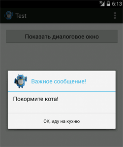
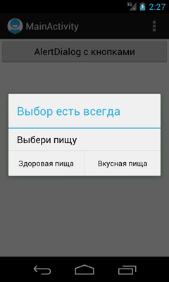
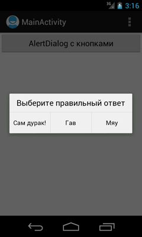
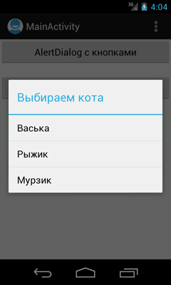
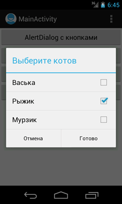
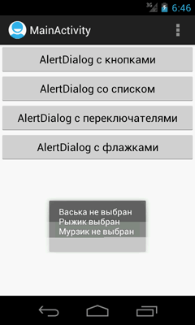
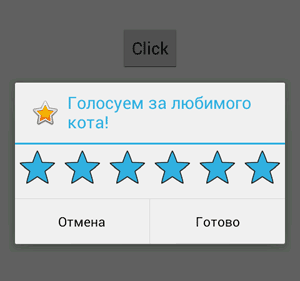
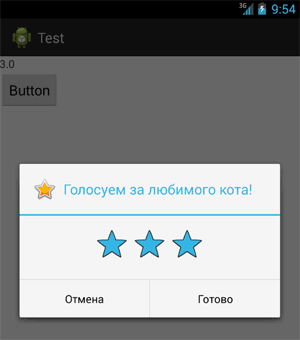

/* Моя кошка замечательно разбирается в программировании. Стоит мне объяснить проблему ей - и все становится ясно. */
John Robbins, Debugging Applications, Microsoft Press, 2000

/* Моя кошка замечательно разбирается в программировании. Стоит мне объяснить проблему ей - и все становится ясно. */
John Robbins, Debugging Applications, Microsoft Press, 2000
С одной кнопкой
Нелёгкий выбор - пример с двумя кнопками
AlertDialog в методе onCreateDialog()
AlertDialog со списком
AlertDialog с переключателями
AlertDialog с флажками
Автоматическое закрытие окна
AlertDialog с рейтингом
Диалоговое окно AlertDialog является расширением класса Dialog, и это наиболее используемое диалоговое окно в практике программиста. Очень часто требуется показать диалог с кнопками Да и Нет, а также Мур и Мяу. В создаваемых диалоговых окнах можно задавать следующие элементы:
Начнём с простого примера - покажем на экране диалоговое окно с одной кнопкой.
public void onClick(View v) {
AlertDialog.Builder builder = new AlertDialog.Builder(MainActivity.this);
builder.setTitle("Важное сообщение!")
.setMessage("Покормите кота!")
.setIcon(R.drawable.ic_android_cat)
.setCancelable(false)
.setNegativeButton("ОК, иду на кухню",
new DialogInterface.OnClickListener() {
public void onClick(DialogInterface dialog, int id) {
dialog.cancel();
}
});
AlertDialog alert = builder.create();
alert.show();
}

Сначала мы создаём объект класса AlertDialog.Builder, передав в качестве параметра контекст приложения. Затем, используя методы класса Builder, задаём для создаваемого диалога заголовок (метод setTitle()), текстовое сообщение в теле диалога (метод setMessage()), значок (метод setIcon()), а также кнопку через метод под странным названием setNegativeButton(). Вам не стоит обращать название метода, позже мы подробнее остановимся на этом моменте. Чтобы пользователь не мог закрыть диалог клавишей Back на клавиатуре телефона, вызывается метод setCancelable() с параметром false. И, наконец, для отображения окна вызывается метод show().
Сама обработка нажатия кнопки внутри диалогового окна задаётся внутри метода setNegativeButton(). В нашём случае мы просто закрываем окно диалога через метод cancel().
Обратите внимание на не совсем обычный способ вызова череды методов цепочкой через точку .setMessage("Покормите кота!").setIcon(R.drawable.ic_android_cat) и т.д. Такой синтаксис можно часто увидеть в JQuery. При таком способе не нужно использовать точку с запятой в конце каждого метода, вы просто склеиваете все вызовы. Но можете использовать и обычный синтаксис.
Теперь рассмотрим пример создания диалогового окна с двумя кнопками на основе иллюстрации. Добавим на главный экран кнопку для вызова диалога и перейдём к коду:
package ru.alexanderklimov.alertdialogdemo;
import android.os.Bundle;
import android.app.Activity;
import android.app.AlertDialog;
import android.content.Context;
import android.content.DialogInterface;
import android.content.DialogInterface.OnCancelListener;
import android.content.DialogInterface.OnClickListener;
import android.view.Menu;
import android.view.View;
import android.widget.Toast;
public class MainActivity extends Activity {
AlertDialog.Builder ad;
Context context;
@Override
public void onCreate(Bundle savedInstanceState) {
super.onCreate(savedInstanceState);
setContentView(R.layout.activity_main);
context = MainActivity.this;
String title = "Выбор есть всегда";
String message = "Выбери пищу";
String button1String = "Вкусная пища";
String button2String = "Здоровая пища";
ad = new AlertDialog.Builder(context);
ad.setTitle(title); // заголовок
ad.setMessage(message); // сообщение
ad.setPositiveButton(button1String, new OnClickListener() {
public void onClick(DialogInterface dialog, int arg1) {
Toast.makeText(context, "Вы сделали правильный выбор",
Toast.LENGTH_LONG).show();
}
});
ad.setNegativeButton(button2String, new OnClickListener() {
public void onClick(DialogInterface dialog, int arg1) {
Toast.makeText(context, "Возможно вы правы", Toast.LENGTH_LONG)
.show();
}
});
ad.setCancelable(true);
ad.setOnCancelListener(new OnCancelListener() {
public void onCancel(DialogInterface dialog) {
Toast.makeText(context, "Вы ничего не выбрали",
Toast.LENGTH_LONG).show();
}
});
}
public void onClick(View v) {
ad.show();
}
@Override
public boolean onCreateOptionsMenu(Menu menu) {
getMenuInflater().inflate(R.menu.activity_main, menu);
return true;
}
}

Общая часть кода осталась прежней - объект класса AlertDialog.Builder, методы для настройки окна, а также кнопки диалога и обработку событий на них. В AlertDialog можно добавить только по одной кнопке каждого типа: Positive, Neutral и Negative, т. е. максимально возможное количество кнопок в диалоге — три. На названия кнопок не обращайте внимания, они не несут смысловой нагрузки, а только определяют порядок вывода. Причём в разных версиях Android порядок менялся. Поэтому на старых устройствах кнопка Да может быть первой, а на новых - последней. Для каждой кнопки используется один из методов с префиксом set...Button, которые принимают в качестве параметров надпись для кнопки и интерфейс DialogInterface.OnClickListener, определяющий действие при нажатии. Чтобы пользователь не мог закрыть диалог клавишей Back на клавиатуре телефона, вызывается метод setCancelable() с параметром false, в нашем случае используется значение true и выводится всплывающее сообщение, которое изучили на прошлом уроке. И, наконец, для отображения окна вызывается метод show().
На самом деле диалоговое окно AlertDialog очень гибкое в настройках. Диалоговое окно по вашему желанию может быть очень простым, например, с двумя стандартными кнопками «Да» и «Нет», а также очень сложным (с значками, списками, переключателями).
Чтобы диалоговые окна сохраняли своё состояние, рекомендуется использовать методы активности onCreateDialog() и onPrepareDialog().
Рассмотрим пример с использованием метода onCreateDialog(). Разницы практически нет. Повторяем все предыдущие шаги, для отображения диалогового окна вызывается метод builder.create(). Например, для создания диалога с кнопками Мяу, Гав, Сам дурак! код будет выглядеть приблизительно так:
package ru.alexanderklimov.alertdialogdemo;
import android.os.Bundle;
import android.app.Activity;
import android.app.AlertDialog;
import android.app.Dialog;
import android.content.Context;
import android.content.DialogInterface;
import android.content.DialogInterface.OnCancelListener;
import android.content.DialogInterface.OnClickListener;
import android.view.Menu;
import android.view.View;
import android.widget.Toast;
public class MainActivity extends Activity {
AlertDialog.Builder ad;
Context context;
// идентификатор диалогового окна AlertDialog с кнопками
private final int IDD_THREE_BUTTONS = 0;
@Override
public void onCreate(Bundle savedInstanceState) {
super.onCreate(savedInstanceState);
setContentView(R.layout.activity_main);
...
}
public void onClick(View v) {
//ad.show();
showDialog(IDD_THREE_BUTTONS);
}
@Override
protected Dialog onCreateDialog(int id) {
switch (id) {
case IDD_THREE_BUTTONS:
AlertDialog.Builder builder = new AlertDialog.Builder(this);
builder.setMessage("Выберите правильный ответ")
.setCancelable(false)
.setPositiveButton("Мяу",
new DialogInterface.OnClickListener() {
public void onClick(DialogInterface dialog,
int id) {
dialog.cancel();
}
})
.setNeutralButton("Гав",
new DialogInterface.OnClickListener() {
public void onClick(DialogInterface dialog,
int id) {
dialog.cancel();
}
})
.setNegativeButton("Сам дурак!",
new DialogInterface.OnClickListener() {
public void onClick(DialogInterface dialog,
int id) {
dialog.cancel();
}
});
return builder.create();
default:
return null;
}
}
}

Итак, мы перенесли код в метод onCreateDialog(). Так как в одном приложении может использоваться несколько видов диалоговых окон, то мы создали отдельный идентификатор IDD_THREE_BUTTONS, чтобы через него вызывать нужный диалог в методе showDialog(), который прописал в обработчике нажатия кнопки, закомментировав строчку от предыдущего примера. Если вы создавали проект под новые версии Android, то могли увидеть, что метод showDialog() перечёркнут, так как теперь он считается устаревшим. Начиная с Android 3.0, необходимо использовать DialogFragment.
Если вам нужно диалоговое окно со списком выбираемых пунктов вместо кнопок, то используйте метод setItems(), где нужно указать массив данных для отображения в списке диалога и интерфейс dialogInterface.OnClickListener, который определяет действие, когда пользователь выбирает элемент списка. Добавим в проект ещё одну кнопку и напишем код:
private final int IDD_LIST_CATS = 1;
public void onClick(View v) {
switch (v.getId()) {
...
case R.id.button2:
showDialog(IDD_LIST_CATS);
break;
...
}
@Override
protected Dialog onCreateDialog(int id) {
switch (id) {
...
case IDD_LIST_CATS:
final String[] mCatsName ={"Васька", "Рыжик", "Мурзик"};
builder = new AlertDialog.Builder(this);
builder.setTitle("Выбираем кота"); // заголовок для диалога
builder.setItems(mCatsName, new DialogInterface.OnClickListener() {
@Override
public void onClick(DialogInterface dialog, int item) {
// TODO Auto-generated method stub
Toast.makeText(getApplicationContext(),
"Выбранный кот: " + mCatsName[item],
Toast.LENGTH_SHORT).show();
}
});
builder.setCancelable(false);
return builder.create();
default:
return null;
}
}
Запустите проект на выполнение. При нажатии кнопки вызова диалога должно появиться окно AlertDialog со списком из трех пунктов для выбора имени кота. При выборе одного из пунктов меню появится всплывающее уведомление, показывающее выбранного кота.

Для создания диалогового окна с переключателями RadioButton применяется метод setSingleChoiceitems() вместо метода setItems(). Если диалоговое окно создается внутри onCreateDialog(), система Android управляет состоянием списка с переключателями. Пока текущая деятельность активна, диалоговое окно при последующих вызовах запоминает ранее выбранные пункты.
private final int IDD_RADIO_CATS = 2;
// часть кода из onCreateDialog()
case IDD_RADIO_CATS:
final String[] mChooseCats = { "Васька", "Рыжик", "Мурзик" };
builder = new AlertDialog.Builder(this);
builder.setTitle("Выберите любимое имя кота")
.setCancelable(false)
// добавляем одну кнопку для закрытия диалога
.setNeutralButton("Назад",
new DialogInterface.OnClickListener() {
public void onClick(DialogInterface dialog,
int id) {
dialog.cancel();
}
})
// добавляем переключатели
.setSingleChoiceItems(mChooseCats, -1,
new DialogInterface.OnClickListener() {
@Override
public void onClick(DialogInterface dialog,
int item) {
Toast.makeText(
getApplicationContext(),
"Любимое имя кота: "
+ mChooseCats[item],
Toast.LENGTH_SHORT).show();
}
});
return builder.create();
Обратите внимание на следующие детали. При выборе переключателя диалоговое окно закрываться не будет. Поэтому необходимо предусмотреть механизм закрытия окна, например, добавить кнопку. Второй момент - в методе setSingleChoiceitems для первого параметра используется массив значений для переключателей, а для второго параметра используется целочисленное значение индекса переключателя, который будет включен по умолчанию при вызове диалогового окна. Если вы хотите, чтобы все переключатели при запуске были в выключенном состоянии, то используйте значение -1.

Если вы хотите использовать вместо переключателей флажки (CheckBox) для множественного выбора, то вам нужен метод setMultiChoiceItems(). Код практически идентичен предыдущему примеру:
private final int IDD_CHECK_CATS = 3;
// часть кода из onCreateDialog()
case IDD_CHECK_CATS:
final boolean[] mCheckedItems = { false, true, false };
final String[] checkCatsName = { "Васька", "Рыжик", "Мурзик" };
builder = new AlertDialog.Builder(this);
builder.setTitle("Выберите котов")
.setCancelable(false)
.setMultiChoiceItems(checkCatsName, mCheckedItems,
new DialogInterface.OnMultiChoiceClickListener() {
@Override
public void onClick(DialogInterface dialog,
int which, boolean isChecked) {
mCheckedItems[which] = isChecked;
}
})
// Добавляем кнопки
.setPositiveButton("Готово",
new DialogInterface.OnClickListener() {
@Override
public void onClick(DialogInterface dialog,
int id) {
StringBuilder state = new StringBuilder();
for (int i = 0; i < checkCatsName.length; i++) {
state.append("" + checkCatsName[i]);
if (mCheckedItems[i])
state.append(" выбран\n");
else
state.append(" не выбран\n");
}
Toast.makeText(getApplicationContext(),
state.toString(), Toast.LENGTH_LONG)
.show();
}
})
.setNegativeButton("Отмена",
new DialogInterface.OnClickListener() {
@Override
public void onClick(DialogInterface dialog,
int id) {
dialog.cancel();
}
});
return builder.create();
Первый параметр в методе setMultiChoiceItems() — массив значений для списка с флажками, второй параметр — булевый массив состояний флажков списка по умолчанию при вызове диалога. Например, мы хотим, чтобы второй элемент списка был отмечен флажком, а остальные элементы нужно оставить неотмеченными. В этом случае используем массив из булевых значений:
final boolean[] mCheckedItems = {false, true, false};
Как и в предыдущем случае с переключателями, для диалогового окна с флажками необходимо использовать кнопки для закрытия окна. Пока приложение активно, оно помнит предыдущее состояние диалогового окна.
 
В отличие от сообщения Toast, которое закрывается через одну-две секунды, диалоговые окна сами не закрываются, а ждут реакции пользователя. Но если мы воспользуемся таймером, то сможем обойти это ограничение (подсмотрел тут).
Добавим в проект кнопку для вызова самозакрывающего диалогового окна и напишем код для обработчика щелчка кнопки:
public void onClick(View v) {
AlertDialog.Builder builder = new AlertDialog.Builder(v.getContext());
builder.setTitle("Автоматическое закрытие окна");
builder.setMessage("Через пять секунд это окно закроется автоматически!");
builder.setCancelable(true);
final AlertDialog dlg = builder.create();
dlg.show();
final Timer timer = new Timer();
timer.schedule(new TimerTask() {
public void run() {
dlg.dismiss(); // when the task active then close the dialog
timer.cancel(); // also just top the timer thread, otherwise,
// you may receive a crash report
}
}, 5000); // через 5 секунд (5000 миллисекунд), the task will be active.
}
Однажды я повстречал в сети пример включения компонента RatingBar в диалог. При тестировании обнаружил, что код работает не совсем корректно. На экран всегда выводятся шесть звёздочек, несмотря на установленные настройки. А если развернуть приложение в альбомный режим, то выводятся и семь звездочек и больше, в зависимости от размеров экрана. Оставил пример на память, если кто-то разберётся в чём тут была проблема, то дайте знать.
public TextView txtView;
public void onCreate(Bundle savedInstanceState) {
super.onCreate(savedInstanceState);
setContentView(R.layout.activity_test);
txtView = (TextView) findViewById(R.id.textView1);
}
public void onClick(View v) {
showRatingDialog();
}
public void showRatingDialog() {
final AlertDialog.Builder ratingdialog = new AlertDialog.Builder(this);
final RatingBar rating = new RatingBar(this);
ratingdialog.setIcon(android.R.drawable.btn_star_big_on);
ratingdialog.setTitle("Голосуем за любимого кота!");
ratingdialog.setView(rating);
rating.setMax(5);
rating.setNumStars(5);
rating.setStepSize((float) 1.0);
ratingdialog.setPositiveButton("Готово",
new DialogInterface.OnClickListener() {
public void onClick(DialogInterface dialog, int which) {
txtView.setText(String.valueOf(rating.getRating()));
dialog.dismiss();
}
})
.setNegativeButton("Отмена",
new DialogInterface.OnClickListener() {
public void onClick(DialogInterface dialog, int id) {
dialog.cancel();
}
});
ratingdialog.create();
ratingdialog.show();
}

Читатели предложили несколько вариантов решения проблемы. Как следует из документации, компонент RatingBar следует размещать в макете, который имеет свойство wrap_content. Поступим следующим образом. Создадим отдельную разметку с RatingBar, которую присоединим к диалоговому окну. Итак, разметка:
<?xml version="1.0" encoding="utf-8"?>
<LinearLayout xmlns:android="http://schemas.android.com/apk/res/android"
android:id="@+id/linearlayout"
android:layout_width="wrap_content"
android:layout_height="wrap_content"
android:orientation="vertical"
android:padding="2dip" >
<RatingBar
android:id="@+id/ratingbar"
android:layout_width="wrap_content"
android:layout_height="wrap_content"
android:layout_gravity="center"
android:layout_marginBottom="10dp"
android:layout_marginTop="10dp"
android:clickable="true"
android:isIndicator="false"
android:numStars="3"
android:rating="2"
android:stepSize="1.0" />
</LinearLayout>
Теперь модифицированный код:
public void showRatingDialog() {
final AlertDialog.Builder ratingdialog = new AlertDialog.Builder(this);
ratingdialog.setIcon(android.R.drawable.btn_star_big_on);
ratingdialog.setTitle("Голосуем за любимого кота!");
View linearlayout = getLayoutInflater().inflate(R.layout.ratingdialog, null);
ratingdialog.setView(linearlayout);
final RatingBar rating = (RatingBar)linearlayout.findViewById(R.id.ratingbar);
ratingdialog.setPositiveButton("Готово",
new DialogInterface.OnClickListener() {
public void onClick(DialogInterface dialog, int which) {
txtView.setText(String.valueOf(rating.getRating()));
dialog.dismiss();
}
})
.setNegativeButton("Отмена",
new DialogInterface.OnClickListener() {
public void onClick(DialogInterface dialog, int id) {
dialog.cancel();
}
});
ratingdialog.create();
ratingdialog.show();
}

Обратите внимание, что для доступа к свойствам RatingBar, мы вызываем метод View.findViewById(), а не Activity.findViewById(), как обычно мы привыкли делать в методе onCreate(), когда опускаем название класса.